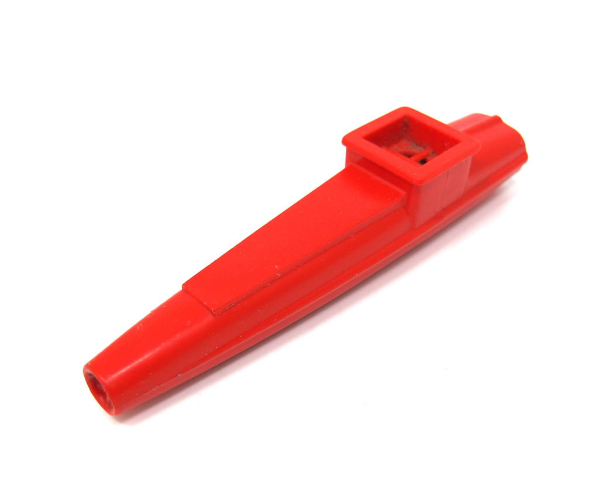

Instruments

Over the span of the last few centuries, certain instruments have managed to shine through as to become the era's most popular or distinguished instrument. The violin, piano, cello, flute, and others were appreciated vastly by the major public. But, a few in the shadows, the ones that are the topic of this vlog, have secretely managed to become one of the world's most beloved instruments. Even though not distinguished, complex, or skillful, these instruments have captivated out hearts.